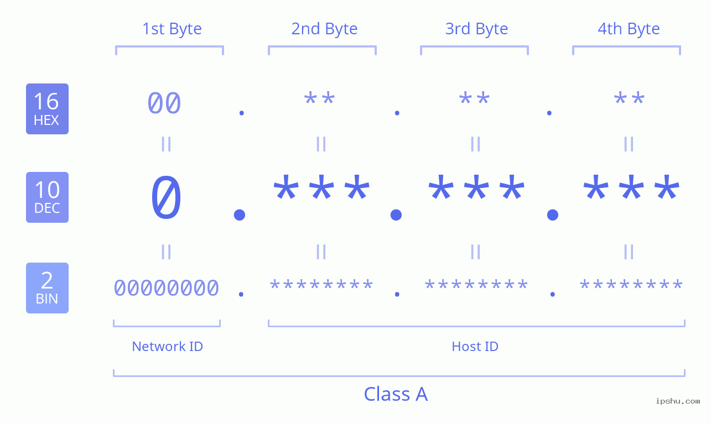
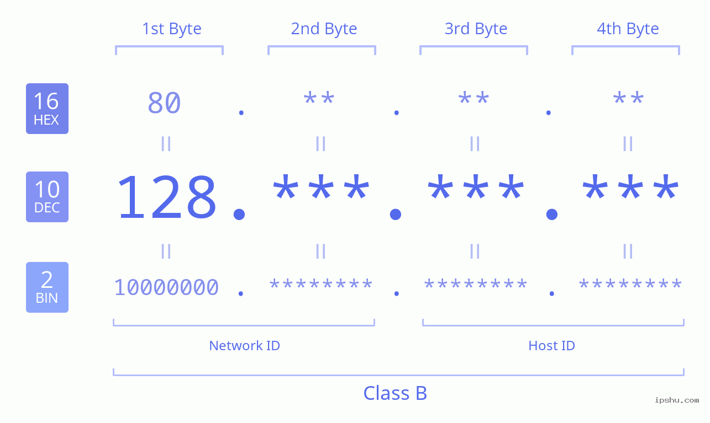
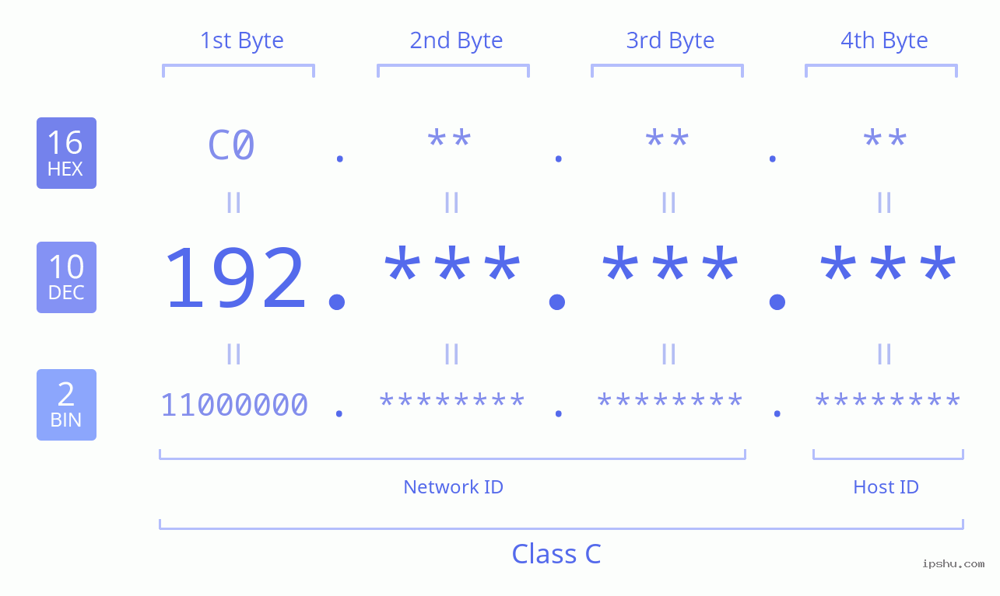

Ebben az osztályban az első 8 bit a hálózatot mutatja, a többi bit kiosztható cím. Összesen 2^24-2=16777214 gép csatlakoztatható egy A osztályú hálózathoz.
Ebben az osztályban a bitek fele a hálózatot, a másik fele pedig a gépet azonosítja. Összesen 2^16-2=65534 gép csatlakoztatható egy B osztályú hálózathoz.
Ebben az osztályban az első 3 oktet a hálózatot mutatja a 4. oktet pedig a gépet azonosítja. Összesen 2^8-2=254 gép csatlakoztatható egy C osztályú hálózathoz.
Az IPv4 címek 4 oktetből állnak, amelyeket pontok választanak el egymástól. Minden oktet egy 0 és 255 közötti számot tartalmaz. Ez a szám attól függ, hogy a bitek értéke mennyi.
Fontos tudni, hogy bizonyos IP címek fenntartottak speciális célokra, például a hálózati cím, ami az első illetve a broadcast cím, ami az utolsó. Ezeket a címeket nem lehet eszközökhöz rendelni.
Az IP címek feloszthatók kisebb hálózatokra is, ezt subnettingnek nevezzük. Ilyenkor elveszünk egy bitet a gépeknek kiosztható címekből és odaadjuk a hálózatoknak.